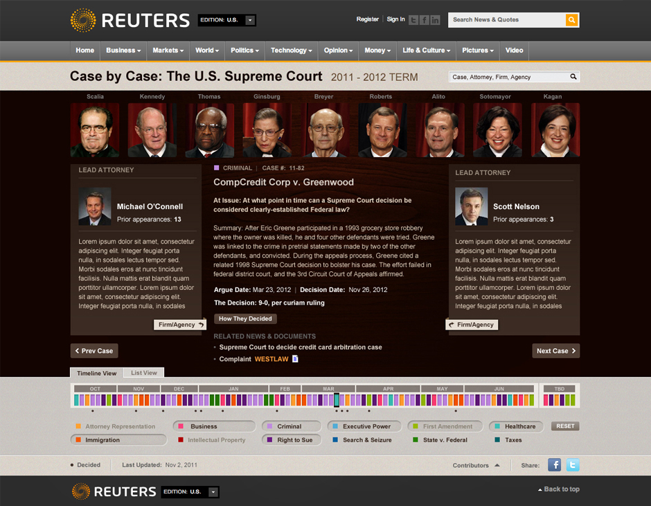

monica rachel parra
Director, Design & UX EngineeringAn interactive look at each issue before the Supreme Court during the 2011-2012 session, featuring case summaries, information on the lawyers, firms and agencies behind every case and links to important legal briefs and headlines.
